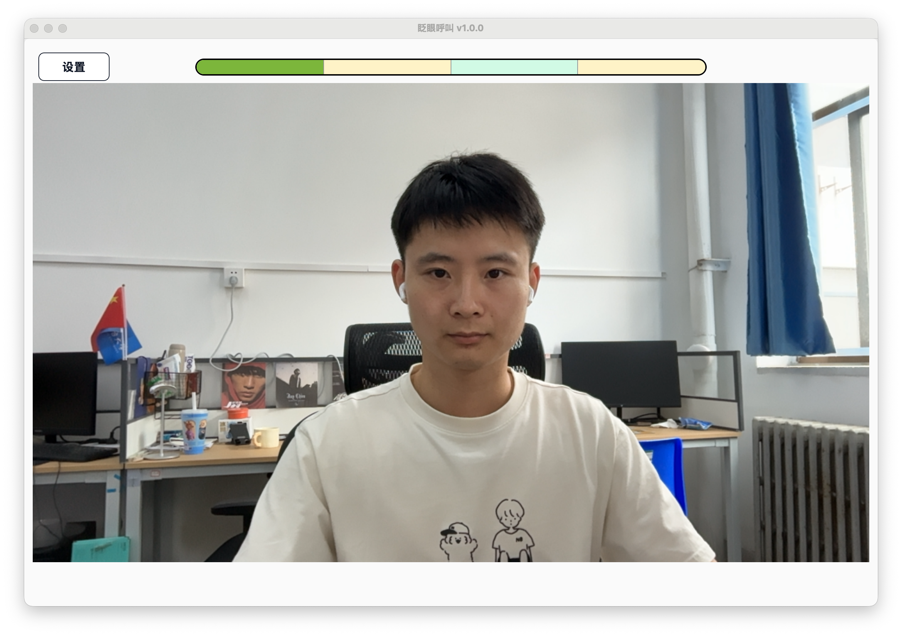
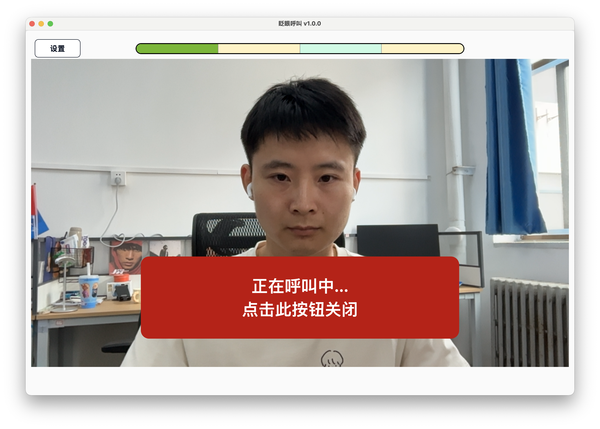

Daily Use
After the first-time setup is complete, daily use only requires opening the software, checking the camera view, and completing the configured blink sequence to trigger a call.
Open the Software
Before each use, double-click BlinkCall.exe and confirm that the main screen shows the camera view.

Make Sure Both Eyes Are Clearly Visible
Make sure both of the patient's eyes appear fully in the camera view. The eyes should not be covered by hair, bedding, hands, eyeglass frames, or other objects.
Trigger a Call with the Blink Sequence
Open and close the eyes in order according to the current blink sequence.
The default sequence is:
Eyes open for 2 seconds -> eyes closed for 2 seconds -> eyes open for 2 seconds -> eyes closed for 2 seconds.
Watch the Top Progress Bar
The progress bar at the top shows the completion status of the current blink action.
- Light green: eyes-open stage.
- Light yellow: eyes-closed stage.
- Dark green: current completed progress.
During each stage, keep the current eye-open or eye-closed state until that stage is complete. After finishing one stage, start the next stage within 3 seconds, or the progress will reset.

Stop the Call Alert
After the call is triggered, the software will play an alert sound and show the call alert screen.
To stop it early, click the stop button on the call alert screen.
